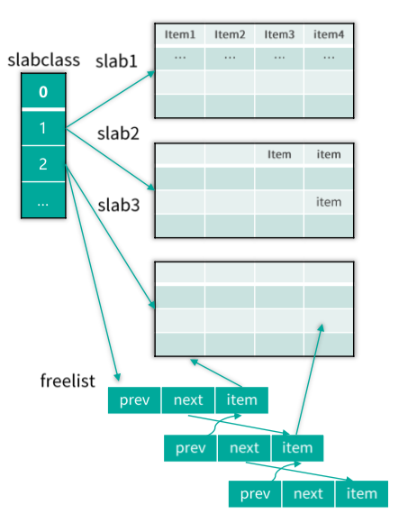
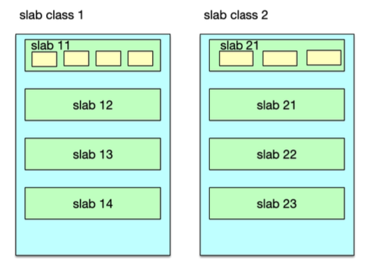
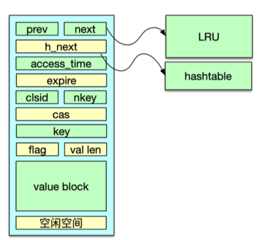
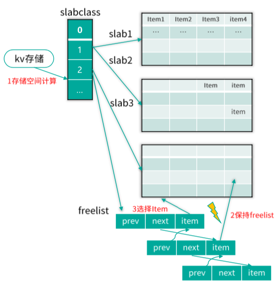
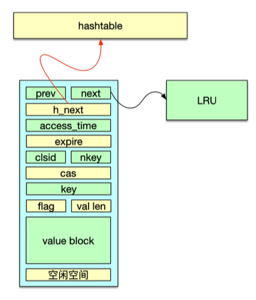

- 00 开篇寄语：缓存，你真的用对了吗？.md.html
- 01 业务数据访问性能太低怎么办？.md.html
- 02 如何根据业务来选择缓存模式和组件？.md.html
- 03 设计缓存架构时需要考量哪些因素？.md.html
- 04 缓存失效、穿透和雪崩问题怎么处理？.md.html
- 05 缓存数据不一致和并发竞争怎么处理？.md.html
- 06 Hot Key和Big Key引发的问题怎么应对？.md.html
- 07 MC为何是应用最广泛的缓存组件？.md.html
- 08 MC系统架构是如何布局的？.md.html
- 09 MC是如何使用多线程和状态机来处理请求命令的？.md.html
- 10 MC是怎么定位key的.md.html
- 11 MC如何淘汰冷key和失效key.md.html
- 12 为何MC能长期维持高性能读写？.md.html
- 13 如何完整学习MC协议及优化client访问？.md.html
- 14 大数据时代，MC如何应对新的常见问题？.md.html
- 15 如何深入理解、应用及扩展 Twemproxy？.md.html
- 16 常用的缓存组件Redis是如何运行的？.md.html
- 17 如何理解、选择并使用Redis的核心数据类型？.md.html
- 18 Redis协议的请求和响应有哪些“套路”可循？.md.html
- 19 Redis系统架构中各个处理模块是干什么的？.md.html
- 20 Redis如何处理文件事件和时间事件？.md.html
- 21 Redis读取请求数据后，如何进行协议解析和处理.md.html
- 22 怎么认识和应用Redis内部数据结构？.md.html
- 23 Redis是如何淘汰key的？.md.html
- 24 Redis崩溃后，如何进行数据恢复的？.md.html
- 25 Redis是如何处理容易超时的系统调用的？.md.html
- 26 如何大幅成倍提升Redis处理性能？.md.html
- 27 Redis是如何进行主从复制的？.md.html
- 28 如何构建一个高性能、易扩展的Redis集群？.md.html
- 29 从容应对亿级QPS访问，Redis还缺少什么？.md.html
- 30 面对海量数据，为什么无法设计出完美的分布式缓存体系？.md.html
- 31 如何设计足够可靠的分布式缓存体系，以满足大中型移动互联网系统的需要？.md.html
- 32 一个典型的分布式缓存系统是什么样的？.md.html
- 33 如何为秒杀系统设计缓存体系？.md.html
- 34 如何为海量计数场景设计缓存体系？.md.html
- 35 如何为社交feed场景设计缓存体系？.md.html
12 为何MC能长期维持高性能读写？
你好，我是你的缓存课老师陈波，欢迎进入第 12 课时“Memcached 内存管理 slab 机制”的学习。
内存管理 slab 机制
讲完淘汰策略，我们接下来学习内存管理 slab 机制。
Mc 内存分配采用 slab 机制，slab 机制可以规避内存碎片，是 Mc 能持续高性能进行数据读写的关键。
slabclass
Mc 的 slab 机制是通过 slabclass 来进行运作的，如下图所示。Mc 在启动时，会构建长度为 64 的 slabclass 数组，其中 0 号 slabclass 用于 slab 的重新分配，1~63 号 slabclass 存储数据 Item。存储数据的每个 slabclass，都会记录本 slabclass 的 chunk size，同时不同 slabclass 的 chunk size 会按递增因子增加，最后一个 slabclass（即 63 号 slabclass）的 chunk size 会直接设为最大的 chunk size，默认是 0.5MB。每个 slabclass 在没有空闲的 chunk 时，Mc 就会为其分配一个默认大小为 1MB 的 slab，同时按照本 slabclass 的 chunk size 进行拆分，这些分拆出来的 chunk 会按 Item 结构体进行初始化，然后记录到 slabclass 的 freelist 链表中。当有 key/value 要存储在本 slabclass 时，就从 freelist 分配一个 Item，供其使用。同时，如果 Item 过期了，或被 flush_all 失效了，或在内存不够时被强项剔除了，也会在适当时刻，重新被回收到 freelist，以供后续分配使用。

存储 slab 分配
如下图所示，Mc 的存储空间分配是以 slab 为单位的，每个 slab 的默认大小时 1MB。因此在存数据时，Mc 的内存最小分配单位是 1MB，分配了这个 1MB 的 slab 后，才会进一步按所在 slabclass 的chunk size 进行细分，分拆出的相同 size 的 chunk。这个 chunk 用来存放 Item 数据，Item 数据包括 Item 结构体字段，以及 key/value。
一般来讲，Item 结构体及 key/value 不会填满 chunk，会存在少量字节的浪费，但这个浪费的字节很少，基本可以忽略。Mc 中，slab 一旦分配，就不会再被回收，但会根据运行状况，重新在不同 slabclass 之间进行分配。

当一个 slabclass 没有空闲 chunk，而新数据插入时，就会对其尝试增加一个新的 slab。slabclass 增加新 slab 时，首先会从 0 号全局 slabclass 中复用一个之前分配的 slab，如果 0 号 slabclass 没有 slab，则会尝试从内存堆空间直接分配一个 slab。如果 0 号全局 slabclass 没有空闲 slab，而且 Mc 内存分配已经达到 Mc 设定的上限值，就说明此时没有可重新分配的 slab，分配新 slab 失败，直接返回。
当然，虽然 slabclass 分配 slab 失败，但并不意味着 Item分配会失败，前面已经讲到，可以通过同步 LRU 淘汰，回收之前分配出去的 Item，供新的存储请求使用。
Item
Mc 中，slabclass 中的 chunk 会首先用 Item 结构体进行初始化，然后存到 freelist 链表中，待需要分配给数据存储时，再从 freelist 中取出，存入 key/value，以及各种辅助属性，然后再存到 LRU 链表及 Hashtable 中，如下图所示。Item 结构体，首先有两个 prev、next 指针，在分配给待存储数据之前，这两个指针用来串联 freelist 链表，在分配之后，则用来串联所在的 LRU 链表。接下来是一个 h_next 指针，用来在分配之后串联哈希表的桶单向链表。Item 结构体还存储了过期时间、所属 slabclass id，key 长度、cas 唯一 id 值等，最后在 Item 结构体尾部，存储了 key、flag、value 长度，以及 value block 数据。在 value 之后的 chunk 空间，就被浪费掉了。Item 在空闲期间，即初始分配时以及被回收后，都被 freelist 管理。在存储期间，被哈希表、LRU 管理。

存储 Item 分配
Mc 采用 slab 机制管理分配内存，采用 Item 结构存储 key/value，因此对存储 key/value 的内存分配，就转换为对 Item 的分配。分配 Item 空间时，会进行 10 次大循环，直到分配到 Item 空间才会提前返回。如果循环了 10 次，还没有分配到 Item 空间，则存储失败，返回一个 SERVER_ERROR 响应。
在分配过程中，首先，如果 slabclass 的 freelist 有空间，则直接分配。否则，尝试分配一个新的 slab，新 slab 依次尝试从全局 slab 池（即 0 号 slabclass）中复用一个空闲 slab，如果全局 slab 池没有 slab，则尝试从内存直接分配。分配新 slab 成功后，会按照 slabclass 记录的 chunk size 对 slab 进行分拆，并将分拆出来的 chunk 按 Item 结构初始化后记录到 freelist。如果全局 slab 池为空，且 Mc 内存分配已经达到设定的上限，则走新增 slab 的路径失败，转而进行 5 次小循环，尝试从 COLD LRU 回收过期 key，如果没有过期则直接强制剔除队尾的一个正常 key。如果该 slabclass 的 COLD LRU 没有 Item，则对其 HOT LRU 进行处理，对 HOT 链表队尾 Item 进行回收或者迁移，以方便在下次循环中找到一个可用的 Item 空间。
数据存储机理
讲完 Mc 的哈希表定位、LRU 淘汰、slab 内存分配，接下来我们来看看 Mc 中 key/value 数据的存储机理，通过对数据存储以及维护过程的分析，来把 Mc 的核心模块进行打通和关联。
首先来看 Mc 如何通过 slab 机制将数据写入预分配的存储空间。
如下图所示，当需要存储 key/value 数据时，首先根据 key/value size，以及 Item 结构体的 size，计算出存储这个 key/value 需要的字节数，然后根据这个字节数选择一个能存储的 chunk size 最小的 slabclass。再从这个 slabclass 的 freelist 分配一个空闲的 chunk 给这个 key/value 使用。如果 freelist 为空，首先尝试为该 slabclass 新分配一个 slab，如果 slab 分配成功，则将 slab 按 size 分拆出一些 chunk，通过 Item 结构初始化后填充到 freelist。如果 slab 分配失败，则通过 LRU 淘汰失效的 Item 或强行剔除一个正常的 Item，然后这些 Item 也会填充到 freelist。当 freelist 有 Item 时，即可分配给 key/value。这个过程会重试 10 次，直到分配到 Item 位置。一般情况下，Item 分配总会成功，极小概率情况下也会分配失败，如果分配失败，则会回复一个 SERVER_ERROR 响应，通知 client 存储失败。分配到一个空闲的 Item 后，就会往这个 Item 空间写入过期时间、flag、slabclass id、key，以及 value 等。对于 set 指令，如果这个 key 还有一个旧值，在存入新 value 之前，还会先将这个旧值删除掉。

当对 key/value 分配 Item 成功，并写入数据后，接下来就会将这个 Item 存入哈希表。因为Mc 哈希表存在迁移的情况，所以对于正常场景，直接存入主哈希表。在哈希表迁移期间，需要根据迁移位置，选择存入主哈希表还是旧哈希表。存入哈希表之后，这个 key 就可以快速定位了。然后这个 Item 还会被存入 LRU，Mc 会根据这个 key 的过期时间进行判断，如果过期时间小于 61s，则存入 TEMP LRU，否则存入 HOT LRU。
至此，这个 key/value 就被正确地存入 Mc 了，数据内容写入 slabclass 中某个 slab 的 chunk 位置，该 chunk 用 Item 结构填充，这个 Item 会被同时记录到 Hashtable 和 LRU，如下图所示。通过 Hashtable 可以快速定位查到这个 key，而 LRU 则用于 Item 生命周期的日常维护。

Mc 对 Item 生命周期的日常维护，包括异步维护和同步维护。异步维护是通过 LRU 维护线程来进行的，整个过程不影响 client 的正常请求，在 LRU 维护线程内，对过期、失效 key 进行回收，并对 4 个 LRU 进行链表内搬运和链表间迁移。这是 Item 生命周期管理的主要形式。同步维护，由工作线程在处理请求命令时进行。工作线程在处理 delete 指令时，会直接将 key/value 进行删除。在存储新 key/value 时，如果分配失败，会进行失效的 key 回收，或者强行剔除正常的 Item。这些 Item 被回收后，会进入到 slabclass 的 freelist 进行重复使用。